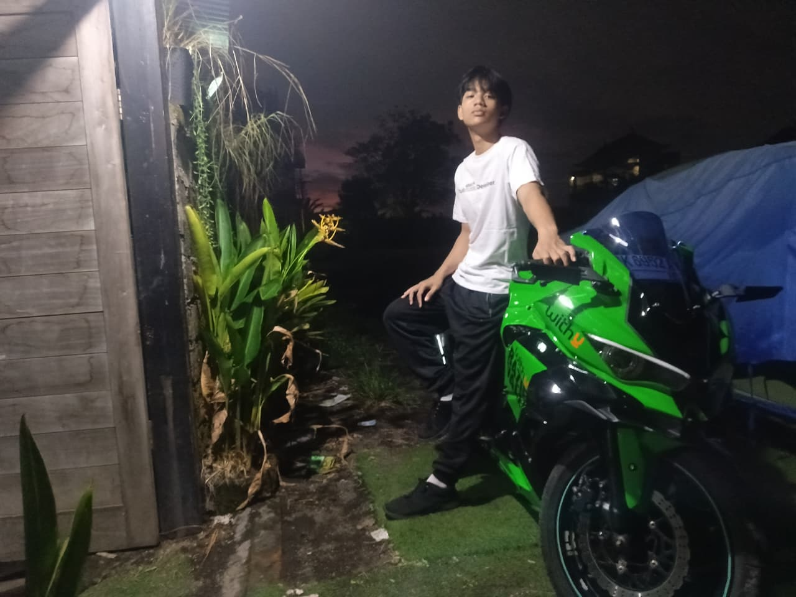

Awalnya aku kira masalah terbesar dari motorsport tua adalah perawatan yang ribet dan mahal, dan dugaan ku benar, namun bukan hanya itu masalah terbesar dari motor ini.
Kurang lebih 6 bulan lalu, aku diberikan motor sport Ninja 250SL oleh ayahku. Motor ini ayahku berikan padauk dalam kondisi yang bagus.. tetapi bagusnya untuk track day 😹 . Motor ini sebelum diberikan padauk oleh ayahku telah di modif body atau fairing zx6r dan juga mengganti ban nya menjadi ukuran yang lebih besar. Dengan modifikasi seperti itu membuat motor Ninja 250SL ini kehilangan potensi maksimal nya secara performa.
Setelah aku pakai motor selama beberapa hari, masalah pertama muncul yaitu overheat. Masalah overheat ini cukup parah karena sampai mengakibatkan cairan coolan radiator menetes dari radiator. Awalnya aku kira masalahnya terletak pada radiatornya dan filter udaranya yang sudah buntu, lalu aku lakukan servis ke bengkel. Namun selang beberapa lama aku berkendara motor ini overheat lagi, lalu aku berpikir apakah sebenarnya ini masalah airflow ke radiator atau karena knalpot SC Project Full System yang terlalu flong yang mengakibatkan pembakaran bahan bakar yang lebih banyak dan mengakibatkan mesin jauh lebih cepat panas
Akhirnya aku memutuskan untuk ganti knalpot menjadi knalpot yang sedikit lebih tenang dann tidak terlalu focus pada performa tinggi. Setelah aku selesaai ganti knalpot masalah overheat ini jauh lebih teratasi, hanya saja tetap ada kemungkinan terjadi jika kondisi stop and go yang terlalu sering atau macet karena tidak adanya airflow yang optimal untuk pendinginan mesin. Namun karena kondisi traffic di daerah ku cenderung sering macet, akhirnya aku memutuskan untuk menginstall extra fan di depan radiator nya agar saat macet motorku tetap bisa melakukan pendinginan mesin dan tidak overheat.

Motor Ninja 250 SL ku yang telah dimodifikasiKini motor Ninja 250SL modifikasi aneh ini pun bisa dipakai untuk keseharianku, sekolah, touring, jalan jalan atau sekedar bermain dengan teman. Motor ini dibuat dengan modifikasi yang aneh, aku yakin sengaja dilakukan oleh ayahku agar aku tidak ugal ugalan di jalanan karena power dari Ninja 250SL ini sangat berbahaya jika digunakan oleh orang yang baru belajar naik motor kopling. Akslerasinya gila dikarenakan karakteristik motorsport 1 silinder yang dapat menyentuh torsi dengan lebih instant disbanding motor 2,3,4 silinder. Namun dengan modifikasi ban "Gambot" dan fairing yang lebih berat dibandingkan versi standart nya, ini membuat Ninja 250SL ku mengalami penurunan performa yang cukup signifikan, mungkin sekitar 10%-15%. Walau kondisi motornya sebelumnya sangat amat optimal untuk track day, namun setelah ganti knalpot dan ganti bahan bakar menjadi RON 92 (iya aku tau ini seharusnya RON 95 keatas untuk performa maksimal.) motor ini menjadi lebih calm dan tidak liar secara performa.
Dari motor ini aku belajar bahwa suatu masalah tidak pasti dapat diselesaikan dengan suatu cara yang sama dengan masalah yang sama lainnya. Terkadang kita harus mencari jalan keluar lain yang mungkin belum pernah dilakukan orang lain. Dan aku juga belajar, bahwa mengendarai motorsport bukan hanya mencari kecepatan tinggi dan akslerasi cepat, melainkan feel berkendara dan juga pengalaman berkendara yang unik. BTW kalau ada yang nanyain apakah airflow fairing custom nya bagus, ya airflow nya lebih bagus daripada fairing bawaannya.